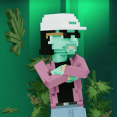 The Doggies (Snoop Dogg) 10,000 个虚拟世界就绪的头像，可在沙盒中播放。 每只小狗都是由 150 多种特征生成的，由 Snoop Dogg 本人策划。 拥有一只小狗可以访问可玩的沙盒化身，以及访问元节内的
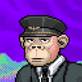 The Dreamers Bitlectro Labs 的第二个系列，Dreamers 以 STRFKR 成员 Keil Corcoran 的 16 位艺术和音乐为特色，还有来自 STRFKR 乐队的 Arian Jalali 的音乐贡献。 梦想家将被整合到即将在 2022 年推出的 Dreamlands Battle A
The Dustland Dustland 是 OliveX 健身虚拟世界中的最新游戏，奖励现实生活中跑步和骑自行车的玩家。该生态系统从头开始设计为使用 DOSE 实用代币进行跨链兼容。此系列中的 NFT 为所有类
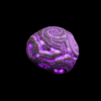 The Evolving Forest 该系列代表 9,336 株神圣的创世纪树苗。公开发售结束后，种子将揭晓。 10 月 15 日将举行神圣的移植仪式，种子将变成美丽独特的树苗，具有不同的特征和稀有度。
The Explorer Guild 使用 255 个手绘属性生成 3000 个可收藏的 NFT。 该系列的灵感来自 200 年前的法国科幻作家儒勒·凡尔纳。他的故事在当时是未来主义的，他的许多工作包括环游世
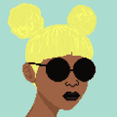 The Glitches NFT The Glitches 是一个包含 5,000 个随机生成的人类头像 NFT 的项目。这是一个以人类特征为中心的项目，并且非常注重多样性。我们专注于以较低的入门成本交付高质量的项目
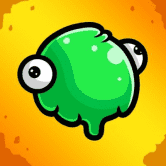 The Goobers Goobers 是 15,000 个完全独特且随机的 NFT 的集合，提供并存储在以太坊区块链上。每个 Goober 都有许多配饰、服装、动画以及他们声称的大脑！价值数万亿美元的公司 Chem
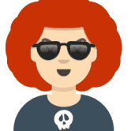 The Hash Avatars Hash Avatars 允许任何人从任何哈希名称中将 Avatars 铸造为 NFT，它建立在 xDai 链上，一个安全、廉价和快速的以太坊侧链。 写点东西，算法会自动生成头像。分身的总数限
The Presidents 《总统大人》是在币安智能链上推出的独一无二的 NFT 和 GameFi 独家合集，包含 20,000 件杰作。现在可以从市场上铸造总统 NFT。 该系列共有8种总统专属头像，分别是
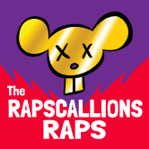 The RAPSCALLIONS 欢迎来到俱乐部 The RAPSCALLIONS - RAPS Rapscallions 多年来一直与斧头团伙交战。尽管我们不认为他们是强大的对手，但我们不能放松警惕。您通过向我们寻求招聘做出了正确的决定，
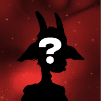 THE REAL GOAT SOCIETY GOAT SOCIETY 是 10,000 只独特的 NFTS 的集合，旨在联合不同的社区和真实山羊的粉丝——有史以来最伟大的系列包括 9,000 只繁殖山羊和 1,000 只独特的手绘山羊。每只山羊都作为 ERC-721 代
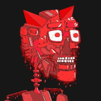 The Rogue Society Rogue Bots 是 15,777 个 Bots 从失败的乌托邦社会中逃脱奴役的图形表示。每个 Rogue Bot 的价格为 0.09 ETH。他们有超过 320 多个可区分的特征。所以一定要密切注意你最喜欢的盗贼
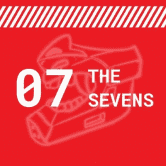 The Sevens (Official) 概述 The Sevens 是 7000 件由算法生成的艺术作品的集合，其中参考了流行文化、动漫、游戏、模因和电影。该系列专注于街头服饰，如衬衫、连帽衫、头饰等。在我们即
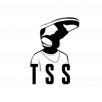 The SneakerHeadz Society Sneakerheadz Society (TSS) 是一个由 4444 名生活在以太坊区块链上的炒作的会员制俱乐部。 完全独特的 NFT，通过它们如何弯曲来定义自己，并相信他们所摇摆的东西绝对优于你的
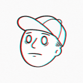 The Uncanny Country Club 首先，我们的使命是建立一个强大的社区，我们能够为其提供即时价值，同时建立一个独特的品牌来推出新的举措。 我们已经看到膨胀的收藏品来来去去，让他
The Vogu Collective Vogu NFT 系列标志着身临其境的多媒体艺术和讲故事计划的开始。 我们的随机 NFT 集合包含 7,777 个独特的机器人化身——这些设计在我们项目的传说中具有叙事意义。 这
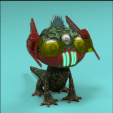 The WynLambo WynLambo 是 9,999 个完整 3D NFT 的可爱但可怕的新系列。WynLambo 是 VOID 的克星。 发布后，对于钱包中的每 3 个 VOID，该钱包将有资格兑换 1 个 WynLambo
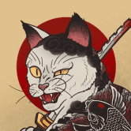 The Yakuza Cats Society Yakuza Cats Society 是 8,930 只具有 300 多种特征的 Yakuza 猫的独特集合。 黑道猫会第一任御侍老了，17岁就去世了。后来，过着猫狗生活的左右手分道扬镳。 他们在不同的地区都有
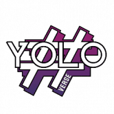 The YoloVerse Project YoloVerse 协议将创新的 NFT 智能合约与 DeFi 方面相结合，包括收益农业、DAO 治理和 GameFi 元素。 由 DeFiYield 和 Solidity Finance 审计。 YoloVerse 协议将创新的 NFT 智能合约与 DeFi 方面相结合，包括收益农
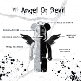 TheBearCollective TBC - 精心策划的独家#NFT 系列，提供对 TBC 品牌的混合访问， 薄荷的物理艺术 + 更多 访问 Web 和 Twitter 获取新闻并加入 Telegram。 前 Genshin Impact 首席关卡设计师 前
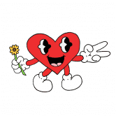 TheHeartProject The Heart Project 是一个社区经营的创意工作室，它使充满激情的创意爱好者能够塑造我们与之互动的艺术。基于以太坊的区块链上的 10,000 个独特代币将作为会员通行证，授
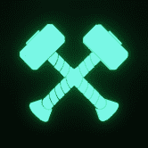 ThorGuards ThorGuards 是以太坊区块链上 9,999 个 NFT 字符的集合，其灵感来自 THORChain、北欧神话和赛博朋克美学。 每个 ThorGuard 都是数百种潜在属性的完全原创组合。 该系列具有
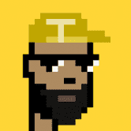 THUNDERCORE PUNKS 这个以 THUNDER 为主题的 ThunderCore Punks 系列现在在 ThunderCore 区块链上活跃起来！ 这 10,000 个 NFT 朋克出生于 2021 年 8 月 28 日。铸币在 https://thundercorepunks.com 上直播 ThunderCore Punks NFT 采用 ThunderCore 属性进行定制设计，并带有一些特殊
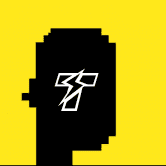 ThunderPunks 为什么 ThunderPunks 如此特别？ ThunderPunks 是 Thundercore 主网上的灵感收藏品。 仅制造 10,000 件，均具有独特功能。 收集它们，购买一个作为礼物送给某人或在市场上交易它们！ 向加密朋克致敬
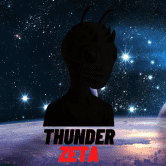 ThunderZeta 为什么 ThunderZeta 如此特别？ ThunderZeta 是 ThunderCore 主网上的灵感收藏品。 仅制造 10,000 件，均具有独特功能。 收集它们，购买一个作为礼物送给某人或在市场上交易它们！ 为了公平起见，
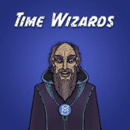 Time Wizards Fantom 上的 Time Wizards NFT 是由财政部支持的 NFT，每天向随机持有者空投收益，从所有 Time Wizards 都被铸造后开始。 根据国库的价值，我们的空投时间表从每天 5,000 美元到 20,000 美元
Timeless NFTs Timeless 是由惊人的@viii 设计的头像集合。 它们不仅是高质量的动漫 PFP，而且它们还将作为 Treeverse 中的可玩角色发挥作用，与普通角色相比，它们是独一无二的
TIMEPiece Community TIMEPieces 的所有者将能够将他们的数字钱包连接到我们的网站，并在 2023 年 TIME 成立 100 周年之际无限访问 TIME.com。他们还将收到我们未来的一些面对面活动的独
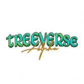 Treeverse Treeverse 是一款基于浏览器的 MMO。 Treeverse 致力于成为一个取代 Discord、Clubhouse 和 Twitter 等社交平台的地方，用于 NFT 聊天，同时游戏化体验。 用我们独
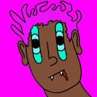 Trippie X 这是一段奇妙旅程的开始，业主将收到来自下一个 Trippie X 系列的 nft。这只是一条有趣的道路的开始 Trippie Redd 与 XXXTentacion 的争执似乎在周一（3 月 19 日）“Dark Knight Du
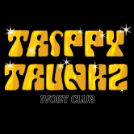 Trippy Trunkz Ivory Club Trippy Trunkz Ivory Club 是在#BSC 漫游的 10,000 头大象美眉的集合。他们非常可爱，但非常危险和坏蛋。我们建议所有猎人和偷猎者小心！ 我们的使命是为 TTIC 成员创造一个令人
Troglodyte Society Troglodyte Society 的成立是为了支持西非塞拉利昂的贫困儿童。用 NFT 为孩子们带来更美好的明天，让孩子过好未来的每一天。 Troglodyte Society ERC - 271 NFT 智能合约存在于 Polygon 区块链上。 Mint 价
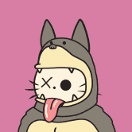 UNIBUNNY 区块链上最独特的 NFT，Unibunny 是在以太坊上创建的 9999 的集合，从 125 多个独特的选项中随时生成。 Unibunny 是我们代表平等、联系和创造的化身。我们的
Unique Bubbles 只有 200,000 个 Bubbles 可以被个性化和生成以作为 NFT 收藏品铸造。 Dapp 由 blobs 应用开源代码开发，建立在 xDai 链（以太坊侧链）之上。 如果您曾经有机会拥有任何 Bubble，
Yung Ape Squad Official 每只 Yung Ape 都是独一无二的，并经过精心设计，与它的专属主人建立了情感纽带。与其他衍生设计不同，Yung Apes 的每一个组合都经过了广泛的审查过程，从而
Z-Huge by MountVitruvius Z-huge 是我的第一个区块链项目。以诸葛亮的机器牛命名。 让这项工作的每一个输出都感觉特别，同时从相同的代码无休止地生成，这是一个真正的挑战。对于之前
Zipcy's SuperNormal Zipcy 是 8,888 个生成 NFT，通过描绘多样化和独特的元素并包含各种人类身份和情感来代表个人主义。 Zipcy’s 由一个 6 人团队组成，包括艺术家、运营、开发人员和网页
ZombieCats 9,999 只猫在以太坊区块链上被辐射僵尸化。通过质押赚取 $CATFISH 并拥有部分猫金库的一部分。所有者将对 DAO 的资产拥有投票权。目前所有投票都在 Snapshot 上进行，其中 1 只
goblintownNFT AAAAAAAUUUUUGGGHHHHH 地精 地精 地精 GOBLINNNNNNNNNns 在地精镇醒来你闻 RATS oooooh 老鼠是 yummmz 这是 BLOKCHIN 上的 NEFTEEE 或 GOBBLINGS 什么？ 哦。 crustybutt goblinking 说 GEE EMMM DEDJEN RUTS 和queenie 说 HLLO SWEATIES 好的，那就是再见我们是被遗忘的妖精
Good Boi Society 收集 9,999 个独特的 Good Boi NFT 中的任何一个。 没有噱头、路线图或 defi，只有可爱的 NFT 总督。购买总督，您将收到每个 Good Boi 的 SVG 文件和 twitter 大小的 PNG。每个 Good Boi
GOOP TROOP GOOP TROOP：愚蠢的超大光学人 GOOP 完全在链上，不使用外部服务器。 GOOP 所有者可以更改其 GOOP 链上的描述，这将反映在 OpenSea 中。 GOOP 的版税为 0%，可以以多种不同
Grails by PROOF Collective 20位艺术家。 20 件独特的艺术品。 铸币厂后公布的艺术家姓名。GRAILS 是 PROOF Collective NFT 发布的 20 件独特的 NFT 艺术作品的集合。 PROOF Collective 是一个拥有 1,000 名成员的 NFT 收